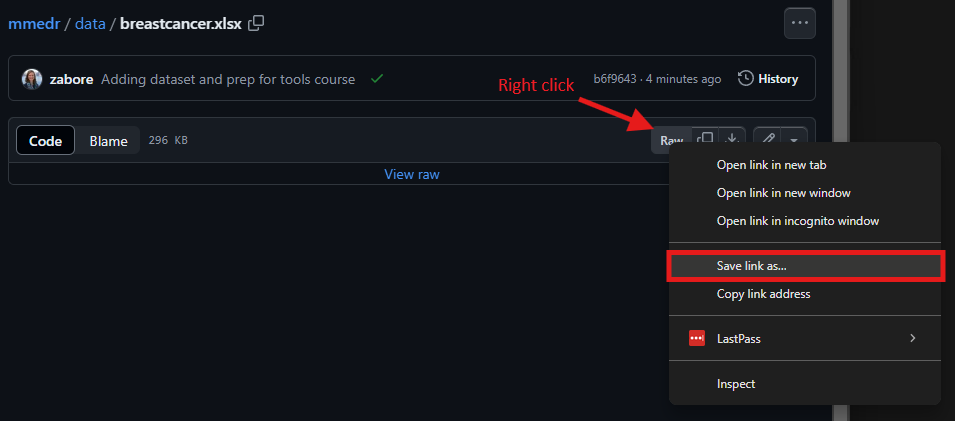

install.packages("readxl") # Already installed on Posit Workbench
library(readxl)Loading data
In this part of Session 1, we will learn how to load external data into R.
Many R packages come with data bundled into them. These datasets are available for use as soon as the package is loaded.
However, we often need to load external data that we’ve generated in our lab or from a clinical study.
Formatting data for use in R
If you are creating your own datasets for future analysis in R, or advising someone else about how best to do so, here are some tips:
- One row per patient/subject
- Column with a unique identifier for each subject (i.e. a patient ID)
- OR, if you have longitudinal or other repeated measures data, have another column identifying the repeat instance and then there can be multiple rows per patient for each repeat instance
- One row of column labels (i.e. avoid a second row of headers where some cells are merged, etc)
- One measurement with one column name in each column (i.e. avoid separating multiple pieces of data by commas, semicolons, etc within a cell)
- Simple variable names for each column - avoid long names and special characters
- No color coding or other special formatting - will be stripped away on loading into R
Dataset for use in this class
The primary dataset used throughout this course is stored in this folder. We need to download it from GitHub onto our personal computers.
Navigate to the above location and left click on breastcancer.xlsx.
For a .xlsx file like this, you won’t see a preview of the data. Now right click on “Raw” and then select “Save link as…”

- Navigate to the “mmedr” folder we created earlier on your home directory, and save the file there as “breastcancer.xlsx”.
Loading Excel data
The most common data format we work with are data from Excel. We will learn three ways to load Excel datasets into R, and then will introduce some options for alternative file types.
We will look at options to:
- Read in Excel files with the {readxl} package
- Read in Excel files by converting to .csv first
- Read in Excel files by converting to .csv first and using the {readr} package
The readxl package
First, install the {readxl} package from CRAN, then load the newly installed package. This should have been completed in Session 1, Exercise 2.
Then use the read_excel() function with the appropriate filepath to read in the data and create an object called “mydf”:
mydf <- read_excel("~/folder/filename.xlsx")
Tip
R treats the \ as a special character so you either need to use / or \(\backslash \backslash\) in file paths.
Tip
On the Linux server (i.e. on Rstudio Pro via Posit Workbench), the path starts at /home/username, so filepaths relative to your directory can start “~/” followed by the folder where the file is located.
Convert to .csv
Alternatively, we can convert the file from .xlsx format to .csv format first, and then read it in.
Advantages: removes some of the possible formatting pitfalls associated with Excel files, and you don’t need any special packages to read this format.
- Open the Excel file.
- Go to File > Save As and navigate to the folder where you want to save the data, if you are not already there
- Select “CSV (Comma delimited)” from the “Save as type” drop down and save the file with the desired name
- Use the
read.csv()function with the appropriate file path to read in the data and create an object called “mycsv”
mycsv <- read.csv("~/folder/filename.csv") Convert to .csv and use the readr package
Using the same approach as above to first save the Excel file into .csv format, we can alternatively use the read_csv() function from the {readr} package to read in the data, instead of read.csv().
First, install the {readr} package from CRAN, then load the newly installed package. This should have been completed in Session 1, Exercise 2.
install.packages("readr") # Already installed on Posit Workbench
library(readr)Then read in the data using the read_csv() function with the appropriate filepath and create an object called “mycsv2”
mycsv2 <- read_csv("~/folder/filename.csv")
Tip
The read.csv() function reads a file into a data.frame object whereas the read_csv() function reads a file into a tibble object.
The tibble objects have some advantages over data.frame objects such as faster loading and ability to handle non-standard column names.
Note that the third approach is the one I use, and will form the basis of my examples in the rest of this course.
Loading other file formats
Many other file formats exist, and here is a non-comprehensive list of functions for loading some of them:
read.table()is the most generic function and can read many file typesread.csv()is a special case with fixed defaults for comma-separated filesread.csv2()is a special case with fixed defaults for comma-separated files that were created in a country where commas are used in place of decimal placesread.delim()is a special case with fixed defaults for tab-delimited filesread.delim2()is a special case with fixed defaults for tab-delimited files that were created in a country where commas are used in place of decimal places
Variable names with the {janitor} package
Recall: R is case sensitive
- i.e.
ageis not the same asAge.
- Variable names with spaces and special characters can be problematic:
- Depending on how you read your data in, R may or may not automatically reformat variable names
- If you end up with a variable called, e.g. “Patient Age” you would need to reference it in all code using backticks:
`Patient Age` - One alternative is to use the
clean_names()function from the {janitor} package to convert all variable names to a standard format, such as snake case
First, install the {janitor} package from CRAN, then load the newly installed package. This should have been completed in Session 1, Exercise 2.
install.packages("janitor") # Already installed on Posit Workbench
library(janitor)Then use the clean_names() function to convert all variable names to snake case (default):
mycsv2 <- clean_names(mycsv2)Snake case is all lowercase letters, with underscores separating any individual words.